HISTORIA
Eres Zagreo, hijo de Hades y Perséfone, pero tu padre no deja que veas a tu madre y solo quiere que vivas en el inframundo. Pero a ti nunca se te ha dado bien seguir las normas, asique día tras día decides empezar el ascenso desde el Tártaro a la superficie, pasando por los ardientes Asfódelos y el señorial Elíseo para encontrar a tu madre y poder saciar tu ansia de respuestas. Conseguirlo o no dependerá de tu destreza y de las ayudas clandestinas de los dioses olímpicos y diversos personajes griegos de renombre.
OPINIÓN

Opinión personal sobre el juego
Hades es uno de mis juegos favoritos, mezcla un estilo de juego de acción Roguelike junto con la mitoligía griega(una de mis grandes pasiones).
El mundo que construye tanto en escenarios como en historia es absolutamente increíble. No hay un solo personaje que pase inadvertido y la manera de interactuar entre los mismo es exquisita. El modo de juego tán frenético hace que no puedas aburrirte ni un solo segundo. Muy recomendado.
Calificación: 10/10
PERSONAJES
DIOSES CTÓNICOS
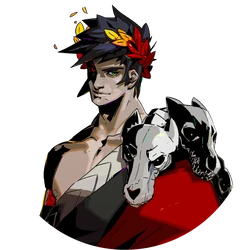
Zagreo
Personaje principal, hijo de Hades y Perséfone. Es el príncipe del inframundo y el hermano mayor de Melinoe(de la que hablaremos en Hades 2).
Siempre ha sentido que no pertenece a la Morada de Hades. Después de conocer la verdad sobre su linaje, decide que va a escapar del inframundo sin importar lo que pase, yendo en contra de la voluntad de su padre. Está ayudado y animado por su mentor Aquiles y su madre adoptiva Nicte, quien le puso en contacto con los dioses del Olimpo quienes le garantizan bendiciones para hacerlo mucho más fuerte en sus intentos de escape. A pesar de su ayuda ellos solo le ven como un semi-dios
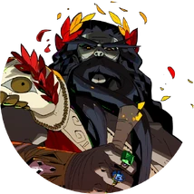
Hades
Es el dios Ctónico del inframundo y de las riquezas minerales de la tierra, el amo y señor de la Morada de Hades y padre de Zagreo y Melinoe. Es el encargado de mantener el orden del inframundo , determinando el lugar y los castigos de los muertos y escuchando las peticiones de las sombras que vienen a él.
Hades es severo, serio y dedicado en su trabajo. En los recuerdos que se muestran antes de algunos intentos de escape se puede ver como ha sido estricto y a menudo cruel con Zagreo en su infancia. Empleó a Aquiles para enseñar a Zagreo a luchar y darle una más que "firme dirección en la vida". Mientras tanto, Hades parece haber dejado gran parte del cuidado y de la crianza de Zagreo a Nicte
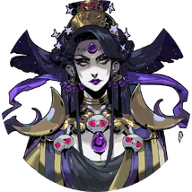
Nicte
También referenciada como "Madre Noche", es la personificación de la noche y una residente en la Morada de Hades. Se encarga de dar consejo, ordenes y de revisar el trabajo del día de los dioses ctónicos y del personal, como se ve en sus interacciones con Megara, Dusa y el Contratista de la casa. También es la creadora de las armas nocturnas junto con sus hermanas las erinias.
Nicte es hija de Caos y madre de Caronte, Nemesis, Tánatos, Hypnos y muchos otros. También es madre adoptiva de Zagreo y Melinoe
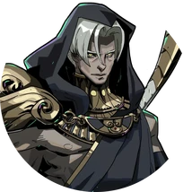
Tánatos
Es la personificación de la muerte, hijo de Nicte y hermano mayor de su hermano gemelo Hipnos.
Como la encarnación de la muerte, Tánatos tiene que hacer muchas incursiones al mundo mortal. Su mas reciente incursión ha tomado más tiempo del habitual - Zagreo y Hipnos han especulado que es por la guerra que se está llevando a cabo - pero aparece de vez en cuando en los intentos de escapada de Zagreo. Aparentemente no le gusta el mundo mortal, en especial lo luminoso que puede llegar a ser
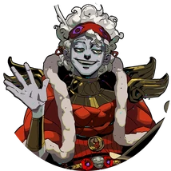
Hipnos
Hipnos es la personificación del sueño. Es uno de los muchos hijos de Nicte, y el hermano gemelo menor de Tánatos.
Vigila la procesión de las sombras recién llegadas ante Hades, marcando sus nombres en su lista. A menudo se le ve durmiendo en el trabajo.
Él saluda a Zagreo la mayor parte del tiempo cuando el príncipe es asesinado y regresa a la Casa a través de la Piscina de Estigia, y a menudo da consejos inútiles y una ocurrencia sobre cualquier enemigo o fuerza natural que haya matado a Zagreo
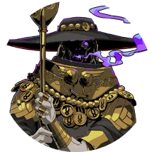
Caronte
Caronte es el barquero del Inframundo y la transición encarnada, hijo de Nicte, y responsable de transportar las almas de los difuntos a través del río y al inframundo. En la mitología griega, requería un óbolo único - colocado en la boca antes del entierro - como pago por sus servicios, o el alma en cuestión se quedaría vagando por las orillas de la laguna Estigia durante cien años.
Los servicios de Caronte en el juego son, lamentablemente, mucho más caros; funciona como el tendero del juego, vendiendo a Zagreo varias mejoras, objetos curativos y bendiciones a cambio de los óbolos que recolecta durante su intento de escape
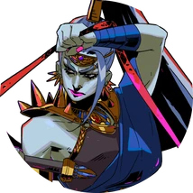
Megara
Megara es una de las tres hermanas Furias. Es la hermana mayor de Tisífone y Alecto, y es responsable de castigar a los adúlteros, a los que rompen juramentos y a los ladrones. Hades la envía para impedir que Zagreus escape del Inframundo. Zagreus debe derrotarla antes de avanzar a los Asfódelos durante cualquier intento de escape.
Después de su primera derrota, Megara se unirá a la Morada de Hades como un personaje con el que se puede interactuar, aunque seguirá intentando impedir que Zagreo entre en los Asfódelos
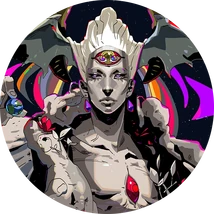
Caos
Caos es la encarnación del vacío primordial del cual surgieron Nicte y todos los demás Primordiales. Ofrecen bendiciones a Zagreo que, a diferencia de los impulsos instantáneos ofrecidos por los dioses olímpicos, intercambian una desventaja por una cierta cantidad de encuentros a cambio de un mayor poder más adelante.
El Caos reside dentro de las Puertas del Caos que a veces se encuentran dentro de las salas
DIOSES OLÍMPICOS
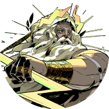
Zeus
Zeus es el dios olímpico del cielo y el trueno, y el gobernante (y padre de algunos) de los dioses olímpicos. Es el hermano menor de Hades y el tío de Zagreus. Ofrece bendiciones a su sobrino que le dan habilidades de rayo en cadena o rayos.
Las bendiciones de Zeus sobresalen en infligir daño a grupos de enemigos, ya que los efectos de cadena de rayos rebotan entre los enemigos, y los rayos pueden golpear a múltiples enemigos
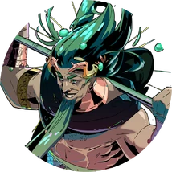
Poseidon
Poseidón es el dios olímpico del mar, los terremotos y los caballos, y ocasionalmente se le conoce con el epíteto de "Sacudidor de la Tierra". Él, como muchos de sus compañeros olímpicos, ofrece bendiciones a Zagreo que aumentan significativamente el daño de sus habilidades, así como hacen que sus habilidades infligieran Empuje.
Los bendiciones de Poseidón ofrecen el tercer mayor aumento de daño porcentual bruto en Hades, así como la capacidad de empujar a los enemigos, causando daño extra por choque contra la pared o trampas
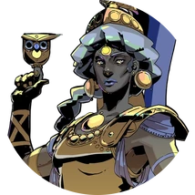
Atenea
Atenea es la diosa olímpica de la sabiduría y la guerra estratégica. Ofrece bendiciones a Zagreo que hacen que sus habilidades desvíen los ataques enemigos. Además, también ofrece bendiciones que reducen el daño o aumentan otras opciones defensivas.
Atenea ofrece excelentes opciones defensivas con sus bendiciones, protegiéndote del daño con la capacidad de desviar los proyectiles y ataques cuerpo a cuerpo enemigos, así como reducir el daño que recibirás en una partida
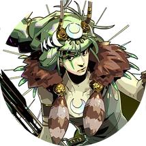
Artemisa
Artemisa es la diosa olímpica de la caza y la hermana gemela mayor de Apolo. Ofrece bendiciones a Zagreo que dan a sus habilidades la posibilidad de infligir daño crítico. Además, también ofrece bendiciones que mejoran las habilidades de Lanzamiento.
Si bien la bonificación de daño que ofrecen sus bendiciones es menor en comparación con la de otros dioses, los golpes críticos que ofrecen infligen tres veces el daño de una habilidad normal, lo que otorga una de las mejores ganancias de DPS en general ofrecidas por cualquier dios o diosa. Los dobendicionesnes de Artemisa, cuando se combinan adecuadamente con otros bendiciones, tienen el potencial de infligir un daño tremendo. Además, sus bendiciones relacionados con Lanzamiento aumentan tu munición total o agregan un proyectil, lo que permite aún más una poderosa herramienta a distancia
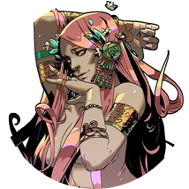
Afrodita
Afrodita es la diosa olímpica del amor y la belleza. Ofrece bendiciones a Zagreo que infligen Debilidad o hacen que los enemigos sean más susceptibles al daño.
Su maldición de estado característica es Debilidad, que reduce el daño de los enemigos afectados en un 30%. Afrodita también ofrece bendiciones que aumentan la efectividad de su propia maldición de estado, como Vacío Interior (que aumenta la duración del efecto)
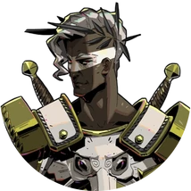
Ares
Ares es el dios olímpico de la guerra. A diferencia de Atenea, más orientada a la estrategia, el dominio de Ares son los aspectos físicos, violentos e indómitos de la guerra.
Ofrece bendiciones a Zagreo, que pueden aumentar su daño de habilidad, infligir su Maldición de Estado característica, Perdición, o crear Fisuras de Cuchillas que infligen daño rápido a los enemigos que entran en ellas.
Los bendiciones de Ares infligen grandes cantidades de daño con el tiempo, ya sea manteniendo a los enemigos dentro de las Fisuras de Cuchillas o aplicando continuamente Perdición a los enemigos
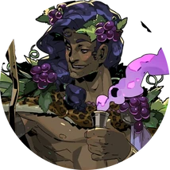
Dionisio
Dioniso es el dios olímpico del vino y la locura, y primo de Zagreo. Ofrece bendiciones a Zagreo relacionados con su Maldición de Estado característica, Resaca, que ralentiza y aturde a los enemigos, así como varios bendiciones temáticos de bebida.
Dioniso ofrece fuertes habilidades de daño en el tiempo en casi todos sus bendiciones ofensivos. Sin embargo, también puede dar a Zagreo fuertes habilidades de utilidad en forma de aturdimientos, ralentizaciones, curaciones y salud, efectos de reducción de daño y objetos
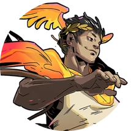
Hermes
Hermes es el dios olímpico del comercio, la astucia y los viajes, así como el mensajero de los dioses. Trabaja con Caronte para guiar a las almas a su lugar apropiado en el Inframundo, con Hermes entregando las almas a Caronte, para que las transporte por el Estigio el resto del camino. Ofrece bendiciones que mejoran la velocidad de Zagreo de varias maneras, incluyendo la velocidad de ataque y la velocidad especial. Sus bendiciones también pueden mejorar la recuperación del guion y el lanzamiento de Zagreo
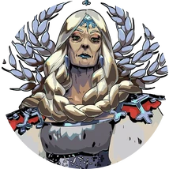
Deméter
Deméter es la diosa olímpica de las estaciones y madre de Perséfone. Muchas de las bendiciones que ofrece a Zagreo infligen su maldición de estado característica, Escalofrío, que hace que los enemigos se ralenticen y, posiblemente, se rompan, propagando la maldición. Además de eso, ofrece el segundo mayor aumento de daño porcentual bruto. Sus otras bendiciones varían entre ayudar a la supervivencia mediante la curación, aumentar el daño o potenciar tus diferentes bendiciones con el tiempo aumentando su rareza.
Las bendiciones de Deméter sobresalen en el control, ya que Escalofrío ralentiza a los enemigos cuanto más los golpea Zagreo. Dado que Escalofrío es fácil de acumular y mantener, esto también permite una buena sinergia con la mejora del Espejo de la Noche, estado privilegiado
PERSONAJES DESTACABLES
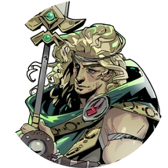
Aquiles
Aquiles es un héroe semidiós famoso por su papel en la Guerra de Troya como guerrero sin igual y como líder de su tribu, los Mirmidones. Su madre lo sumergió en el Estigia cuando era niño para otorgarle la inmortalidad, pero quedó vulnerable en el talón por el que Tetis lo sostenía.
Después de ser herido de muerte cuando Paris le disparó en el talón con una flecha, descendió al Inframundo como una Sombra, donde finalmente fue contratado por Hades para entrenar al joven Zagreo en batalla y disciplina militar a cambio de permitir que su amante Patroclo entrara en el Elíseo. Desde que fue contratado, Aquiles se ha esforzado por ser una fuente de apoyo y aliento para Zagreo ante el trato a menudo duro de Hades
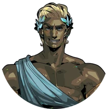
Teseo
Teseo es un antiguo héroe y rey de Atenas, famoso por matar al Minotauro. Hades lo reclutó para ayudar a evitar la fuga de Zagreo. Lucha junto al Minotauro como jefe final del Elíseo, y sirve al Elíseo como su campeón y su rey
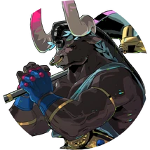
Asterion
Asterion, también conocido como el Minotauro, es un semihumano con cabeza de toro que fue reclutado por Hades para ayudar a evitar la fuga de Zagreo. En vida, Asterion fue encerrado en un laberinto por su padrastro, el rey Minos, solo para ser asesinado finalmente por Teseo. En la muerte, los dos son aparentemente camaradas.
Asterion es un posible encuentro de jefe intermedio en Elíseo, además de aparecer siempre como el jefe final de Elíseo, junto con el rey Teseo en el Estadio de Elíseo
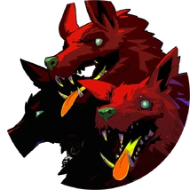
Cerbero
Cerbero es un perro masivo de tres cabezas encargado de guardar las puertas del Inframundo para evitar que los muertos escapen. Es una bestia magnífica, compañera de Hades y Zagreo.
Cuando Zagreo salió de la Casa por primera vez, Cerbero hizo un berrinche que destrozó la sala de estar de la Casa.
Una vez que Zagreo llega al Templo de Estigia, Cerbero guarda su salida. Zagreo debe encontrar un Saco de Sátiro, el bocadillo favorito de Cerbero, como soborno para abandonar la zona
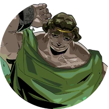
Sísifo
Sísifo es un antiguo rey condenado a una eternidad de castigo en el Tártaro por intentar engañar a la muerte. Tuvo éxito dos veces, cada vez solo temporalmente antes de que las consecuencias lo alcanzaran. Su castigo es empujar una roca cuesta arriba por una empinada colina; sin embargo, la roca siempre rueda colina abajo antes de que llegue a la cima, a pesar de sus mejores esfuerzos. Las Furias, y Megera en particular, lo atormentan mientras intenta empujar la roca, aunque con los recientes intentos de fuga de Zagreo, parecen estar descuidando este deber en particular.
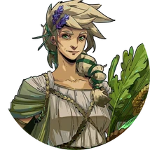
Perséfone
Perséfone es la diosa de la vegetación (particularmente el grano), e hija de Deméter y el campesino mortal. Se casó con Hades y se la conocía por ser una mujer majestuosa y amable como la reina del inframundo.
Ella es la madre biológica de Zagreo, pero desde entonces se fue a la superficie. Se desconoce por qué se fue, o si tuvo éxito en su escape, pero no murió. Si hubiera muerto, habría regresado a la Casa como él lo hace a través del río Estigia. Tras su partida, Hades prohibió toda mención de ella en la Casa, y como tal, sigue siendo una figura de misterio. Solo se la conoce por una secuencia de flashback desencadenada por Zagreo durmiendo en su habitación, y por conversaciones entre Zagreo y Nicte. Antes de los acontecimientos del juego, nadie en la Casa, excepto Nicte y el propio Hades, sabía que Perséfone era la madre de Zagreo; al comienzo del juego, todos en la Casa (excepto Hipnos) han aprendido que este es el caso. Los dioses olímpicos, sin embargo, aún desconocen este hecho al comienzo de la historia, y no conocen los verdaderos motivos de Zagreo para escapar del Inframundo. Se sabe poco sobre la apariencia de Perséfone, hasta que Zagreo llega a Grecia.